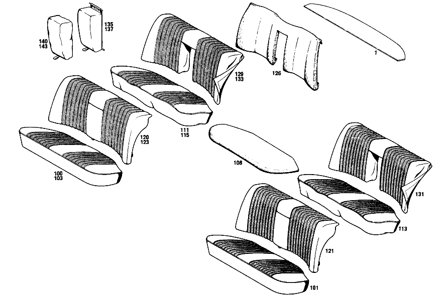

| № | Артикул | Название | Кол. | Примечание | Ограничение |
|---|---|---|---|---|---|
| 1 | A 114 690 00 49 | Обшивка | 1 | ЗАДНЯЯ ПОЛКА Z 55.909/03 [406] ПРИ ЗАКАЗЕ УКАЗЫВАТЬ НОМЕР ЦВЕТА | |
| 10 | A 115 910 21 09 | СИДЕНЬЕ ВОДИТЕЛЯ | 1 | СЛЕВА Z 55.909/01 [406] ПРИ ЗАКАЗЕ УКАЗЫВАТЬ НОМЕР ЦВЕТА [402] БОЛЬШЕ НЕ ПОСТАВЛЯЕТСЯ [002] WHEN ORDERING, PLEASE STATE WHETHER FRONT SEAT BACKRESTS SHOULD BE MADE READY FOR INSTALLATION OF HEADRESTS [004] FROM CHASSIS: 114.021 004095 114.022 009684 114.023 002379 [026] UP TO CHASSIS: 021,022 UNTIL PRODUCTION STOP 023 100397 072 102260 073 102845 | |
| 20 | A 114 910 69 01 | СИДЕНЬЕ ВОДИТЕЛЯ | 1 | СЛЕВА Z 55.909/02 [406] ПРИ ЗАКАЗЕ УКАЗЫВАТЬ НОМЕР ЦВЕТА [402] БОЛЬШЕ НЕ ПОСТАВЛЯЕТСЯ [002] WHEN ORDERING, PLEASE STATE WHETHER FRONT SEAT BACKRESTS SHOULD BE MADE READY FOR INSTALLATION OF HEADRESTS [008] APPLICABLE TO MODELS 114.072,073 | |
| 30 | A 114 910 37 30 | - ПОДУШКА СИДЕНЬЯ | 2 | Z 55.909/01 [406] ПРИ ЗАКАЗЕ УКАЗЫВАТЬ НОМЕР ЦВЕТА [402] БОЛЬШЕ НЕ ПОСТАВЛЯЕТСЯ [010] FROM CHASSIS: 114.021 005800 114.022 014500 114.023 003800 [024] UP TO CHASSIS: 114.023 100222 114.072 101550 114.073 101422 | |
| 40 | A 114 910 47 30 | - ПОДУШКА СИДЕНЬЯ | 2 | Z 55.909/02 [406] ПРИ ЗАКАЗЕ УКАЗЫВАТЬ НОМЕР ЦВЕТА [402] БОЛЬШЕ НЕ ПОСТАВЛЯЕТСЯ [010] FROM CHASSIS: 114.021 005800 114.022 014500 114.023 003800 [024] UP TO CHASSIS: 114.023 100222 114.072 101550 114.073 101422 [014] FROM CHASSIS: 114.021 008801 114.022 021787 114.072 000001 | |
| 48 | A 116 914 04 14 | - НАКЛАДКА | 2 | Z 55.909/01, Z 55.909/02 | |
| 51 | A 115 910 02 46 | - ОБИВКА | 2 | Z 55.909/01 [406] ПРИ ЗАКАЗЕ УКАЗЫВАТЬ НОМЕР ЦВЕТА [026] UP TO CHASSIS: 021,022 UNTIL PRODUCTION STOP 023 100397 072 102260 073 102845 | |
| 55 | A 114 910 15 46 | - ОБИВКА | 2 | Z 55.909/02 [406] ПРИ ЗАКАЗЕ УКАЗЫВАТЬ НОМЕР ЦВЕТА [008] APPLICABLE TO MODELS 114.072,073 | |
| 56 | A 114 910 20 46 | - ОБИВКА | 2 | Z 55.909/01 [406] ПРИ ЗАКАЗЕ УКАЗЫВАТЬ НОМЕР ЦВЕТА [027] FROM CHASSIS: 023 100398 072 102261 073 102846 | |
| 58 | A 115 910 15 32 | - СПИНКА СИДЕНЬЯ | 2 | Z 55.909/01 [406] ПРИ ЗАКАЗЕ УКАЗЫВАТЬ НОМЕР ЦВЕТА [402] БОЛЬШЕ НЕ ПОСТАВЛЯЕТСЯ [002] WHEN ORDERING, PLEASE STATE WHETHER FRONT SEAT BACKRESTS SHOULD BE MADE READY FOR INSTALLATION OF HEADRESTS [026] UP TO CHASSIS: 021,022 UNTIL PRODUCTION STOP 023 100397 072 102260 073 102845 | |
| 60 | A 114 910 63 32 | - СПИНКА СИДЕНЬЯ | 2 | Z 55.909/01 [406] ПРИ ЗАКАЗЕ УКАЗЫВАТЬ НОМЕР ЦВЕТА [027] FROM CHASSIS: 023 100398 072 102261 073 102846 | |
| 63 | A 115 910 42 32 | - СПИНКА СИДЕНЬЯ | 2 | Z 55.909/02 [406] ПРИ ЗАКАЗЕ УКАЗЫВАТЬ НОМЕР ЦВЕТА [402] БОЛЬШЕ НЕ ПОСТАВЛЯЕТСЯ [002] WHEN ORDERING, PLEASE STATE WHETHER FRONT SEAT BACKRESTS SHOULD BE MADE READY FOR INSTALLATION OF HEADRESTS [008] APPLICABLE TO MODELS 114.072,073 | |
| 68 | A 108 914 48 16 | - Накладка | 2 | Z 55.909/01, Z 55.909/02 | |
| 71 | A 115 910 04 74 | - ОБИВКА | 2 | Z 55.909/01 [406] ПРИ ЗАКАЗЕ УКАЗЫВАТЬ НОМЕР ЦВЕТА [026] UP TO CHASSIS: 021,022 UNTIL PRODUCTION STOP 023 100397 072 102260 073 102845 | |
| 73 | A 114 910 27 47 | - ОБИВКА | 2 | Z 55.909/01 [406] ПРИ ЗАКАЗЕ УКАЗЫВАТЬ НОМЕР ЦВЕТА [027] FROM CHASSIS: 023 100398 072 102261 073 102846 | |
| 75 | A 115 910 21 47 | - ОБИВКА | 2 | Z 55.909/02 [406] ПРИ ЗАКАЗЕ УКАЗЫВАТЬ НОМЕР ЦВЕТА [008] APPLICABLE TO MODELS 114.072,073 | |
| 79 | A 108 910 29 39 | - Обшивка | 2 | Z 55.909/01 [406] ПРИ ЗАКАЗЕ УКАЗЫВАТЬ НОМЕР ЦВЕТА | |
| 83 | A 108 910 30 39 | - Обшивка | 2 | Z 55.909/02 [406] ПРИ ЗАКАЗЕ УКАЗЫВАТЬ НОМЕР ЦВЕТА | |
| 100 | A 114 920 00 20 | ПОДУШКИ ЗАДНИХ СИДЕНИЙ | 1 | Z 55.909/01 [406] ПРИ ЗАКАЗЕ УКАЗЫВАТЬ НОМЕР ЦВЕТА [402] БОЛЬШЕ НЕ ПОСТАВЛЯЕТСЯ [026] UP TO CHASSIS: 021,022 UNTIL PRODUCTION STOP 023 100397 072 102260 073 102845 | |
| 101 | A 114 920 19 20 | ПОДУШКИ ЗАДНИХ СИДЕНИЙ | 1 | Z 55.909/01 [406] ПРИ ЗАКАЗЕ УКАЗЫВАТЬ НОМЕР ЦВЕТА [402] БОЛЬШЕ НЕ ПОСТАВЛЯЕТСЯ [027] FROM CHASSIS: 023 100398 072 102261 073 102846 | |
| 103 | A 114 920 08 20 | ПОДУШКИ ЗАДНИХ СИДЕНИЙ | 1 | Z 55.909/02 [406] ПРИ ЗАКАЗЕ УКАЗЫВАТЬ НОМЕР ЦВЕТА [402] БОЛЬШЕ НЕ ПОСТАВЛЯЕТСЯ [008] APPLICABLE TO MODELS 114.072,073 | |
| 108 | A 114 924 02 14 | - НАКЛАДКА | 1 | Z 55.909/01, Z 55.909/02 | |
| 111 | A 114 920 00 46 | - ОБИВКА | 1 | Z 55.909/01 [406] ПРИ ЗАКАЗЕ УКАЗЫВАТЬ НОМЕР ЦВЕТА [026] UP TO CHASSIS: 021,022 UNTIL PRODUCTION STOP 023 100397 072 102260 073 102845 | |
| 113 | A 114 920 20 46 | - ОБИВКА | 1 | Z 55.909/01 [406] ПРИ ЗАКАЗЕ УКАЗЫВАТЬ НОМЕР ЦВЕТА [027] FROM CHASSIS: 023 100398 072 102261 073 102846 | |
| 115 | A 114 920 12 46 | - ОБИВКА | 1 | Z 55.909/02 [406] ПРИ ЗАКАЗЕ УКАЗЫВАТЬ НОМЕР ЦВЕТА [008] APPLICABLE TO MODELS 114.072,073 | |
| 120 | A 114 920 02 30 | СПИНКА СИДЕНЬЯ | 1 | CENTRAL FOLDING ARMREST Z 55.909/01 [406] ПРИ ЗАКАЗЕ УКАЗЫВАТЬ НОМЕР ЦВЕТА [402] БОЛЬШЕ НЕ ПОСТАВЛЯЕТСЯ [026] UP TO CHASSIS: 021,022 UNTIL PRODUCTION STOP 023 100397 072 102260 073 102845 | |
| 121 | A 114 920 29 30 | СПИНКА СИДЕНЬЯ | 1 | CENTRAL FOLDING ARMREST Z 55.909/01 [406] ПРИ ЗАКАЗЕ УКАЗЫВАТЬ НОМЕР ЦВЕТА [402] БОЛЬШЕ НЕ ПОСТАВЛЯЕТСЯ [027] FROM CHASSIS: 023 100398 072 102261 073 102846 | |
| 123 | A 114 920 11 30 | СПИНКА СИДЕНЬЯ | 1 | Z 55.909/02 [406] ПРИ ЗАКАЗЕ УКАЗЫВАТЬ НОМЕР ЦВЕТА [402] БОЛЬШЕ НЕ ПОСТАВЛЯЕТСЯ [008] APPLICABLE TO MODELS 114.072,073 | |
| 126 | A 115 924 01 16 | - НАКЛАДКА | 1 | Z 55.909/01, Z 55.909/02 | |
| 129 | A 114 920 01 47 | - ОБИВКА | 1 | Z 55.909/01 [406] ПРИ ЗАКАЗЕ УКАЗЫВАТЬ НОМЕР ЦВЕТА [026] UP TO CHASSIS: 021,022 UNTIL PRODUCTION STOP 023 100397 072 102260 073 102845 | |
| 131 | A 114 920 23 47 | - ОБИВКА | 1 | Z 55.909/01 [406] ПРИ ЗАКАЗЕ УКАЗЫВАТЬ НОМЕР ЦВЕТА [027] FROM CHASSIS: 023 100398 072 102261 073 102846 | |
| 133 | A 114 920 10 47 | - ОБИВКА | 1 | Z 55.909/02 [406] ПРИ ЗАКАЗЕ УКАЗЫВАТЬ НОМЕР ЦВЕТА [008] APPLICABLE TO MODELS 114.072,073 | |
| 135 | A 114 970 02 30 | - ПОДЛОКОТНИК ОТКИДН. | 1 | Z 55.909/01 [406] ПРИ ЗАКАЗЕ УКАЗЫВАТЬ НОМЕР ЦВЕТА | |
| 137 | A 114 970 03 30 | - ПОДЛОКОТНИК ОТКИДН. | 1 | Z 55.909/02 [406] ПРИ ЗАКАЗЕ УКАЗЫВАТЬ НОМЕР ЦВЕТА | |
| 140 | A 114 970 12 47 | - ОБИВКА | 1 | Z 55.909/01 [406] ПРИ ЗАКАЗЕ УКАЗЫВАТЬ НОМЕР ЦВЕТА [020] FROM CHASSIS: 114.072 000001 | |
| 143 | A 114 970 13 47 | - ОБИВКА | 1 | Z 55.909/02 [406] ПРИ ЗАКАЗЕ УКАЗЫВАТЬ НОМЕР ЦВЕТА [020] FROM CHASSIS: 114.072 000001 | |
| 155 | A 116 970 14 50 | ПОДГОЛОВНИК | 2 | Z 55.909/01 [406] ПРИ ЗАКАЗЕ УКАЗЫВАТЬ НОМЕР ЦВЕТА [022] FROM CHASSIS: 114.023,072,073 100001 114.021,022 SEE SA 55997 [028] UP TO CHASSIS: ТОЛЬКО ДЛЯ АВСТРАЛИИ 114.023 100632 114.072 102741 114.073 104386 | |
| 158 | A 115 970 43 50 | ПОДГОЛОВНИК | - | Z 55.909/02 | |
| 158 | A 108 970 57 50 | ПОДГОЛОВНИК | 2 | Z 55.909/02 [406] ПРИ ЗАКАЗЕ УКАЗЫВАТЬ НОМЕР ЦВЕТА [022] FROM CHASSIS: 114.023,072,073 100001 114.021,022 SEE SA 55997 [028] UP TO CHASSIS: ТОЛЬКО ДЛЯ АВСТРАЛИИ 114.023 100632 114.072 102741 114.073 104386 | |
| 162 | A 115 970 22 56 | - ОБИВКА | 2 | Z 55.909/01 [417] БОЛЬШЕ НЕ ПОСТАВЛЯЕТСЯ, ЗАКАЗЫВАТЬ КОМПЛЕКТ ПОСТАВКИ [406] ПРИ ЗАКАЗЕ УКАЗЫВАТЬ НОМЕР ЦВЕТА [402] БОЛЬШЕ НЕ ПОСТАВЛЯЕТСЯ [022] FROM CHASSIS: 114.023,072,073 100001 114.021,022 SEE SA 55997 | |
| 165 | A 115 970 21 56 | - ОБИВКА | 2 | Z 55.909/02 [417] БОЛЬШЕ НЕ ПОСТАВЛЯЕТСЯ, ЗАКАЗЫВАТЬ КОМПЛЕКТ ПОСТАВКИ [406] ПРИ ЗАКАЗЕ УКАЗЫВАТЬ НОМЕР ЦВЕТА [402] БОЛЬШЕ НЕ ПОСТАВЛЯЕТСЯ [022] FROM CHASSIS: 114.023,072,073 100001 114.021,022 SEE SA 55997 | |
| A 115 910 05 01 | СИДЕНЬЕ ВОДИТЕЛЯ | 1 | СЛЕВА Z 55.909/01 [406] ПРИ ЗАКАЗЕ УКАЗЫВАТЬ НОМЕР ЦВЕТА [402] БОЛЬШЕ НЕ ПОСТАВЛЯЕТСЯ [002] WHEN ORDERING, PLEASE STATE WHETHER FRONT SEAT BACKRESTS SHOULD BE MADE READY FOR INSTALLATION OF HEADRESTS [003] UP TO CHASSIS: 114.021 004094 114.022 009683 114.023 002378 | ||
| A 114 910 25 09 | СИДЕНЬЕ ВОДИТЕЛЯ | 1 | СЛЕВА Z 55.909/01 [406] ПРИ ЗАКАЗЕ УКАЗЫВАТЬ НОМЕР ЦВЕТА [402] БОЛЬШЕ НЕ ПОСТАВЛЯЕТСЯ [027] FROM CHASSIS: 023 100398 072 102261 073 102846 | ||
| A 115 910 06 01 | СИДЕНЬЕ ВОДИТЕЛЯ | 1 | СПРАВА Z 55.909/01 [406] ПРИ ЗАКАЗЕ УКАЗЫВАТЬ НОМЕР ЦВЕТА [402] БОЛЬШЕ НЕ ПОСТАВЛЯЕТСЯ [002] WHEN ORDERING, PLEASE STATE WHETHER FRONT SEAT BACKRESTS SHOULD BE MADE READY FOR INSTALLATION OF HEADRESTS [003] UP TO CHASSIS: 114.021 004094 114.022 009683 114.023 002378 | ||
| A 115 910 22 09 | СИДЕНЬЕ ВОДИТЕЛЯ | 1 | СПРАВА Z 55.909/01 [406] ПРИ ЗАКАЗЕ УКАЗЫВАТЬ НОМЕР ЦВЕТА [402] БОЛЬШЕ НЕ ПОСТАВЛЯЕТСЯ [002] WHEN ORDERING, PLEASE STATE WHETHER FRONT SEAT BACKRESTS SHOULD BE MADE READY FOR INSTALLATION OF HEADRESTS [004] FROM CHASSIS: 114.021 004095 114.022 009684 114.023 002379 [026] UP TO CHASSIS: 021,022 UNTIL PRODUCTION STOP 023 100397 072 102260 073 102845 | ||
| A 114 910 26 09 | СИДЕНЬЕ ВОДИТЕЛЯ | 1 | СПРАВА Z 55.909/01 [406] ПРИ ЗАКАЗЕ УКАЗЫВАТЬ НОМЕР ЦВЕТА [402] БОЛЬШЕ НЕ ПОСТАВЛЯЕТСЯ [027] FROM CHASSIS: 023 100398 072 102261 073 102846 | ||
| A 115 910 07 01 | СИДЕНЬЕ ВОДИТЕЛЯ | 1 | СЛЕВА Z 55.909/02 [406] ПРИ ЗАКАЗЕ УКАЗЫВАТЬ НОМЕР ЦВЕТА [402] БОЛЬШЕ НЕ ПОСТАВЛЯЕТСЯ [002] WHEN ORDERING, PLEASE STATE WHETHER FRONT SEAT BACKRESTS SHOULD BE MADE READY FOR INSTALLATION OF HEADRESTS [003] UP TO CHASSIS: 114.021 004094 114.022 009683 114.023 002378 | ||
| A 115 910 23 09 | СИДЕНЬЕ ВОДИТЕЛЯ | 1 | СЛЕВА Z 55.909/02 [406] ПРИ ЗАКАЗЕ УКАЗЫВАТЬ НОМЕР ЦВЕТА [402] БОЛЬШЕ НЕ ПОСТАВЛЯЕТСЯ [002] WHEN ORDERING, PLEASE STATE WHETHER FRONT SEAT BACKRESTS SHOULD BE MADE READY FOR INSTALLATION OF HEADRESTS [004] FROM CHASSIS: 114.021 004095 114.022 009684 114.023 002379 [007] INAPPLICABLE TO MODELS 114.072,073 | ||
| A 115 910 08 01 | СИДЕНЬЕ ВОДИТЕЛЯ | 1 | СПРАВА Z 55.909/02 [406] ПРИ ЗАКАЗЕ УКАЗЫВАТЬ НОМЕР ЦВЕТА [402] БОЛЬШЕ НЕ ПОСТАВЛЯЕТСЯ [002] WHEN ORDERING, PLEASE STATE WHETHER FRONT SEAT BACKRESTS SHOULD BE MADE READY FOR INSTALLATION OF HEADRESTS [003] UP TO CHASSIS: 114.021 004094 114.022 009683 114.023 002378 | ||
| A 115 910 24 09 | СИДЕНЬЕ ВОДИТЕЛЯ | 1 | СПРАВА Z 55.909/02 [406] ПРИ ЗАКАЗЕ УКАЗЫВАТЬ НОМЕР ЦВЕТА [402] БОЛЬШЕ НЕ ПОСТАВЛЯЕТСЯ [002] WHEN ORDERING, PLEASE STATE WHETHER FRONT SEAT BACKRESTS SHOULD BE MADE READY FOR INSTALLATION OF HEADRESTS [004] FROM CHASSIS: 114.021 004095 114.022 009684 114.023 002379 [007] INAPPLICABLE TO MODELS 114.072,073 | ||
| A 114 910 70 01 | СИДЕНЬЕ ВОДИТЕЛЯ | 1 | СПРАВА Z 55.909/02 [406] ПРИ ЗАКАЗЕ УКАЗЫВАТЬ НОМЕР ЦВЕТА [402] БОЛЬШЕ НЕ ПОСТАВЛЯЕТСЯ [002] WHEN ORDERING, PLEASE STATE WHETHER FRONT SEAT BACKRESTS SHOULD BE MADE READY FOR INSTALLATION OF HEADRESTS [008] APPLICABLE TO MODELS 114.072,073 | ||
| A 114 910 59 09 | СИДЕНЬЕ ВОДИТЕЛЯ | 1 | СЛЕВА Z 55.909/03 [406] ПРИ ЗАКАЗЕ УКАЗЫВАТЬ НОМЕР ЦВЕТА [402] БОЛЬШЕ НЕ ПОСТАВЛЯЕТСЯ [002] WHEN ORDERING, PLEASE STATE WHETHER FRONT SEAT BACKRESTS SHOULD BE MADE READY FOR INSTALLATION OF HEADRESTS [031] UP TO CHASSIS: 114.023 101141 114.072 103814 114.073 107275 | ||
| A 114 910 27 01 | СИДЕНЬЕ ВОДИТЕЛЯ | 1 | СЛЕВА Z 55.909/03 [406] ПРИ ЗАКАЗЕ УКАЗЫВАТЬ НОМЕР ЦВЕТА [402] БОЛЬШЕ НЕ ПОСТАВЛЯЕТСЯ [032] FROM CHASSIS: 114.023 101142 114.072 103815 114.073 107276 | ||
| A 114 910 60 09 | СИДЕНЬЕ ВОДИТЕЛЯ | 1 | СПРАВА Z 55.909/03 [406] ПРИ ЗАКАЗЕ УКАЗЫВАТЬ НОМЕР ЦВЕТА [402] БОЛЬШЕ НЕ ПОСТАВЛЯЕТСЯ [002] WHEN ORDERING, PLEASE STATE WHETHER FRONT SEAT BACKRESTS SHOULD BE MADE READY FOR INSTALLATION OF HEADRESTS [031] UP TO CHASSIS: 114.023 101141 114.072 103814 114.073 107275 | ||
| A 114 910 28 01 | СИДЕНЬЕ ВОДИТЕЛЯ | 1 | СПРАВА Z 55.909/03 [406] ПРИ ЗАКАЗЕ УКАЗЫВАТЬ НОМЕР ЦВЕТА [402] БОЛЬШЕ НЕ ПОСТАВЛЯЕТСЯ [032] FROM CHASSIS: 114.023 101142 114.072 103815 114.073 107276 | ||
| A 115 910 05 30 | ПОДУШКА СИДЕНЬЯ | - | Z 55.909/01 [009] UP TO CHASSIS: 114.021 005799 114.022 014499 114.023 003799 | ||
| A 114 910 21 30 | - ПОДУШКА СИДЕНЬЯ | - | Z 55.909/01 [010] FROM CHASSIS: 114.021 005800 114.022 014500 114.023 003800 [011] INAPPLICABLE TO MODEL 114.023 | ||
| A 114 910 89 30 | - ПОДУШКА СИДЕНЬЯ | 2 | Z 55.909/01 [406] ПРИ ЗАКАЗЕ УКАЗЫВАТЬ НОМЕР ЦВЕТА [026] UP TO CHASSIS: 021,022 UNTIL PRODUCTION STOP 023 100397 072 102260 073 102845 [025] FROM CHASSIS: 114.023 100223 114.072 101551 114.073 101423 | ||
| A 114 910 06 31 | - ПОДУШКА СИДЕНЬЯ | 2 | Z 55.909/01 [406] ПРИ ЗАКАЗЕ УКАЗЫВАТЬ НОМЕР ЦВЕТА [027] FROM CHASSIS: 023 100398 072 102261 073 102846 | ||
| A 115 910 06 30 | - ПОДУШКА СИДЕНЬЯ | - | Z 55.909/02 | ||
| A 114 910 22 30 | - ПОДУШКА СИДЕНЬЯ | - | Z 55.909/02 [406] ПРИ ЗАКАЗЕ УКАЗЫВАТЬ НОМЕР ЦВЕТА [010] FROM CHASSIS: 114.021 005800 114.022 014500 114.023 003800 [011] INAPPLICABLE TO MODEL 114.023 | ||
| A 114 910 38 30 | - ПОДУШКА СИДЕНЬЯ | 2 | Z 55.909/02 [406] ПРИ ЗАКАЗЕ УКАЗЫВАТЬ НОМЕР ЦВЕТА [402] БОЛЬШЕ НЕ ПОСТАВЛЯЕТСЯ [007] INAPPLICABLE TO MODELS 114.072,073 [010] FROM CHASSIS: 114.021 005800 114.022 014500 114.023 003800 | ||
| A 114 910 90 30 | - ПОДУШКА СИДЕНЬЯ | 2 | Z 55.909/02 [406] ПРИ ЗАКАЗЕ УКАЗЫВАТЬ НОМЕР ЦВЕТА [402] БОЛЬШЕ НЕ ПОСТАВЛЯЕТСЯ [025] FROM CHASSIS: 114.023 100223 114.072 101551 114.073 101423 | ||
| A 114 910 16 30 | - ПОДУШКА СИДЕНЬЯ | - | Z 55.909/03 [009] UP TO CHASSIS: 114.021 005799 114.022 014499 114.023 003799 | ||
| A 114 910 23 30 | - ПОДУШКА СИДЕНЬЯ | - | Z 55.909/03 [010] FROM CHASSIS: 114.021 005800 114.022 014500 114.023 003800 [015] UP TO CHASSIS: 114.021 008800 114.022 021786 | ||
| A 114 910 39 30 | - ПОДУШКА СИДЕНЬЯ | 2 | Z 55.909/03 [406] ПРИ ЗАКАЗЕ УКАЗЫВАТЬ НОМЕР ЦВЕТА [402] БОЛЬШЕ НЕ ПОСТАВЛЯЕТСЯ [024] UP TO CHASSIS: 114.023 100222 114.072 101550 114.073 101422 [014] FROM CHASSIS: 114.021 008801 114.022 021787 114.072 000001 | ||
| A 114 910 22 31 | - ПОДУШКА СИДЕНЬЯ | 2 | Z 55.909/03 [406] ПРИ ЗАКАЗЕ УКАЗЫВАТЬ НОМЕР ЦВЕТА [402] БОЛЬШЕ НЕ ПОСТАВЛЯЕТСЯ [031] UP TO CHASSIS: 114.023 101141 114.072 103814 114.073 107275 [025] FROM CHASSIS: 114.023 100223 114.072 101551 114.073 101423 | ||
| A 114 910 91 30 | - ПОДУШКА СИДЕНЬЯ | 2 | Z 55.909/03 [406] ПРИ ЗАКАЗЕ УКАЗЫВАТЬ НОМЕР ЦВЕТА [402] БОЛЬШЕ НЕ ПОСТАВЛЯЕТСЯ [032] FROM CHASSIS: 114.023 101142 114.072 103815 114.073 107276 | ||
| A 115 914 01 14 | - НАКЛАДКА | - | Z 55.909/01, Z 55.909/02 | ||
| A 116 914 03 14 | - НАКЛАДКА | - | Z 55.909/01, Z 55.909/02 [415] ПРИМЕЧ. ПО ЗАМЕНЕ ПРИМЕНИМО ТОЛЬКО ДЛЯ СТОЯЩИХ РЯДОМ ПОЗИЦИЙ | ||
| A 116 910 05 50 | - НАКЛАДКА | 2 | Z 55.909/03 | ||
| A 115 910 03 46 | - ОБИВКА | 2 | Z 55.909/02 [406] ПРИ ЗАКАЗЕ УКАЗЫВАТЬ НОМЕР ЦВЕТА [007] INAPPLICABLE TO MODELS 114.072,073 | ||
| A 114 910 23 46 | - ОБИВКА | 2 | Z 55.909/03 [406] ПРИ ЗАКАЗЕ УКАЗЫВАТЬ НОМЕР ЦВЕТА [031] UP TO CHASSIS: 114.023 101141 114.072 103814 114.073 107275 | ||
| A 114 910 02 46 | - ОБИВКА | 2 | Z 55.909/03 [406] ПРИ ЗАКАЗЕ УКАЗЫВАТЬ НОМЕР ЦВЕТА [032] FROM CHASSIS: 114.023 101142 114.072 103815 114.073 107276 | ||
| A 000 987 02 81 | - УПЛОТНИТЕЛЬНЫЙ ШНУР | NB | Z 55.909/03 [406] ПРИ ЗАКАЗЕ УКАЗЫВАТЬ НОМЕР ЦВЕТА [031] UP TO CHASSIS: 114.023 101141 114.072 103814 114.073 107275 [404] ЗАКАЗЫВАТЬ ПОГОННЫМИ МЕТРАМИ | ||
| A 001 987 30 30 | - ОКАНТОВКА | - | Z 55.909/03 | ||
| A 001 987 02 30 | - Окантовка | NB | Z 55.909/03 [404] ЗАКАЗЫВАТЬ ПОГОННЫМИ МЕТРАМИ [406] ПРИ ЗАКАЗЕ УКАЗЫВАТЬ НОМЕР ЦВЕТА [032] FROM CHASSIS: 114.023 101142 114.072 103815 114.073 107276 | ||
| A 115 910 16 32 | - СПИНКА СИДЕНЬЯ | - | Z 55.909/02 | ||
| A 108 910 06 33 | - СПИНКА СИДЕНЬЯ | 2 | Z 55.909/02 [406] ПРИ ЗАКАЗЕ УКАЗЫВАТЬ НОМЕР ЦВЕТА [402] БОЛЬШЕ НЕ ПОСТАВЛЯЕТСЯ [002] WHEN ORDERING, PLEASE STATE WHETHER FRONT SEAT BACKRESTS SHOULD BE MADE READY FOR INSTALLATION OF HEADRESTS [011] INAPPLICABLE TO MODEL 114.023 | ||
| A 114 910 71 32 | - СПИНКА СИДЕНЬЯ | 2 | Z 55.909/03 [406] ПРИ ЗАКАЗЕ УКАЗЫВАТЬ НОМЕР ЦВЕТА [402] БОЛЬШЕ НЕ ПОСТАВЛЯЕТСЯ [002] WHEN ORDERING, PLEASE STATE WHETHER FRONT SEAT BACKRESTS SHOULD BE MADE READY FOR INSTALLATION OF HEADRESTS [031] UP TO CHASSIS: 114.023 101141 114.072 103814 114.073 107275 | ||
| A 108 910 25 33 | СПИНКА СИДЕНЬЯ | 2 | Z 55.909/03 [406] ПРИ ЗАКАЗЕ УКАЗЫВАТЬ НОМЕР ЦВЕТА [402] БОЛЬШЕ НЕ ПОСТАВЛЯЕТСЯ [032] FROM CHASSIS: 114.023 101142 114.072 103815 114.073 107276 | ||
| A 109 910 20 34 | - РАМА СПИНКИ | 2 | Z 55.909/03 | ||
| A 115 914 17 80 | НАКЛАДКА | - | Z 55.909/01, Z 55.909/02 [415] ПРИМЕЧ. ПО ЗАМЕНЕ ПРИМЕНИМО ТОЛЬКО ДЛЯ СТОЯЩИХ РЯДОМ ПОЗИЦИЙ | ||
| A 109 914 38 16 | - НАКЛАДКА | 2 | Z 55.909/03 | ||
| A 115 910 05 74 | - ОБИВКА | 2 | ОБИВКА Z 55.909/02 [406] ПРИ ЗАКАЗЕ УКАЗЫВАТЬ НОМЕР ЦВЕТА [007] INAPPLICABLE TO MODELS 114.072,073 | ||
| A 114 910 30 47 | - ОБИВКА | 2 | Z 55.909/03 [406] ПРИ ЗАКАЗЕ УКАЗЫВАТЬ НОМЕР ЦВЕТА [031] UP TO CHASSIS: 114.023 101141 114.072 103814 114.073 107275 | ||
| A 109 910 76 47 | ОБИВКА | 2 | Z 55.909/03 [406] ПРИ ЗАКАЗЕ УКАЗЫВАТЬ НОМЕР ЦВЕТА [402] БОЛЬШЕ НЕ ПОСТАВЛЯЕТСЯ [032] FROM CHASSIS: 114.023 101142 114.072 103815 114.073 107276 | ||
| A 000 987 02 81 | - УПЛОТНИТЕЛЬНЫЙ ШНУР | NB | 4 X 1000 MM Z 55.909/03 [406] ПРИ ЗАКАЗЕ УКАЗЫВАТЬ НОМЕР ЦВЕТА [031] UP TO CHASSIS: 114.023 101141 114.072 103814 114.073 107275 [404] ЗАКАЗЫВАТЬ ПОГОННЫМИ МЕТРАМИ | ||
| A 001 987 30 30 | - ОКАНТОВКА | - | Z 55.909/03 | ||
| A 001 987 02 30 | - Окантовка | NB | 4 X 800 MM Z 55.909/03 [404] ЗАКАЗЫВАТЬ ПОГОННЫМИ МЕТРАМИ [406] ПРИ ЗАКАЗЕ УКАЗЫВАТЬ НОМЕР ЦВЕТА [032] FROM CHASSIS: 114.023 101142 114.072 103815 114.073 107276 | ||
| A 003 988 01 78 | - Зажимная скоба | 6 | Z 55.909/03 | ||
| A 116 988 00 82 | - Кольцо | - | Z 55.909/03 | ||
| A 126 988 00 82 | - Кольцо | 4 | Z 55.909/03 | ||
| A 108 910 20 39 | - Обшивка | - | Z 55.909/03 [415] ПРИМЕЧ. ПО ЗАМЕНЕ ПРИМЕНИМО ТОЛЬКО ДЛЯ СТОЯЩИХ РЯДОМ ПОЗИЦИЙ [016] НОВ. НОМЕР ДЕТ. СМ. СТАНДАРТ. ИСПОЛНЕНИЕ | ||
| A 115 910 00 06 | НАКЛАДКА ПОДУШКИ СИДЕНЬЯ | - | Z 55.909/01, Z 55.909/02 [009] UP TO CHASSIS: 114.021 005799 114.022 014499 114.023 003799 | ||
| A 114 910 01 06 | НАКЛАДКА ПОДУШКИ СИДЕНЬЯ | - | Z 55.909/02 [010] FROM CHASSIS: 114.021 005800 114.022 014500 114.023 003800 [017] UP TO CHASSIS: 114.021 008784 114.022 021695 114.023 008615 | ||
| A 114 910 03 06 | НАКЛАДКА ПОДУШКИ СИДЕНЬЯ | 2 | Z 55.909/01, Z 55.909/02 [402] БОЛЬШЕ НЕ ПОСТАВЛЯЕТСЯ [024] UP TO CHASSIS: 114.023 100222 114.072 101550 114.073 101422 [018] FROM CHASSIS: 114.021 008785 114.022 021696 114.023 008616 114.072,073 000001 | ||
| A 114 910 07 06 | НАКЛАДКА ПОДУШКИ СИДЕНЬЯ | 2 | Z 55.909/01, Z 55.909/02 [402] БОЛЬШЕ НЕ ПОСТАВЛЯЕТСЯ [025] FROM CHASSIS: 114.023 100223 114.072 101551 114.073 101423 | ||
| A 115 910 09 06 | НАКЛАДКА ПОДУШКИ СИДЕНЬЯ | - | Z 55.909/03 [009] UP TO CHASSIS: 114.021 005799 114.022 014499 114.023 003799 | ||
| A 114 910 02 06 | НАКЛАДКА ПОДУШКИ СИДЕНЬЯ | - | Z 55.909/03 [010] FROM CHASSIS: 114.021 005800 114.022 014500 114.023 003800 [017] UP TO CHASSIS: 114.021 008784 114.022 021695 114.023 008615 | ||
| A 114 910 04 06 | НАКЛАДКА ПОДУШКИ СИДЕНЬЯ | 2 | Z 55.909/03 [402] БОЛЬШЕ НЕ ПОСТАВЛЯЕТСЯ [024] UP TO CHASSIS: 114.023 100222 114.072 101550 114.073 101422 [018] FROM CHASSIS: 114.021 008785 114.022 021696 114.023 008616 114.072,073 000001 | ||
| A 114 910 08 06 | НАКЛАДКА ПОДУШКИ СИДЕНЬЯ | 2 | Z 55.909/03 [402] БОЛЬШЕ НЕ ПОСТАВЛЯЕТСЯ [025] FROM CHASSIS: 114.023 100223 114.072 101551 114.073 101423 | ||
| A 108 910 36 07 | СПИНКА СИДЕНЬЯ | 2 | Z 55.909/01, Z 55.909/02 [402] БОЛЬШЕ НЕ ПОСТАВЛЯЕТСЯ | ||
| A 109 910 18 07 | СПИНКА СИДЕНЬЯ | 2 | Z 55.909/03 [402] БОЛЬШЕ НЕ ПОСТАВЛЯЕТСЯ | ||
| A 114 920 01 20 | ПОДУШКИ ЗАДНИХ СИДЕНИЙ | 1 | Z 55.909/02 [406] ПРИ ЗАКАЗЕ УКАЗЫВАТЬ НОМЕР ЦВЕТА [402] БОЛЬШЕ НЕ ПОСТАВЛЯЕТСЯ [007] INAPPLICABLE TO MODELS 114.072,073 | ||
| A 114 920 22 20 | ПОДУШКИ ЗАДНИХ СИДЕНИЙ | 1 | Z 55.909/03 [406] ПРИ ЗАКАЗЕ УКАЗЫВАТЬ НОМЕР ЦВЕТА [402] БОЛЬШЕ НЕ ПОСТАВЛЯЕТСЯ [031] UP TO CHASSIS: 114.023 101141 114.072 103814 114.073 107275 | ||
| A 114 920 06 20 | ПОДУШКИ ЗАДНИХ СИДЕНИЙ | 1 | Z 55.909/03 [406] ПРИ ЗАКАЗЕ УКАЗЫВАТЬ НОМЕР ЦВЕТА [402] БОЛЬШЕ НЕ ПОСТАВЛЯЕТСЯ [032] FROM CHASSIS: 114.023 101142 114.072 103815 114.073 107276 | ||
| A 115 924 01 14 | НАКЛАДКА | - | Z 55.909/01, Z 55.909/02 | ||
| A 114 924 01 14 | - НАКЛАДКА | 1 | Z 55.909/03 | ||
| A 114 920 01 46 | - ОБИВКА | 1 | Z 55.909/02 [406] ПРИ ЗАКАЗЕ УКАЗЫВАТЬ НОМЕР ЦВЕТА [007] INAPPLICABLE TO MODELS 114.072,073 | ||
| A 114 920 23 46 | - ОБИВКА | 1 | Z 55.909/03 [406] ПРИ ЗАКАЗЕ УКАЗЫВАТЬ НОМЕР ЦВЕТА [031] UP TO CHASSIS: 114.023 101141 114.072 103814 114.073 107275 | ||
| A 114 920 08 46 | ОБИВКА | 1 | Z 55.909/03 [406] ПРИ ЗАКАЗЕ УКАЗЫВАТЬ НОМЕР ЦВЕТА [032] FROM CHASSIS: 114.023 101142 114.072 103815 114.073 107276 | ||
| A 000 987 02 81 | - УПЛОТНИТЕЛЬНЫЙ ШНУР | NB | Z 55.909/03 [406] ПРИ ЗАКАЗЕ УКАЗЫВАТЬ НОМЕР ЦВЕТА [031] UP TO CHASSIS: 114.023 101141 114.072 103814 114.073 107275 [404] ЗАКАЗЫВАТЬ ПОГОННЫМИ МЕТРАМИ | ||
| A 001 987 30 30 | - ОКАНТОВКА | - | Z 55.909/03 | ||
| A 001 987 02 30 | - Окантовка | NB | Z 55.909/03 [404] ЗАКАЗЫВАТЬ ПОГОННЫМИ МЕТРАМИ [406] ПРИ ЗАКАЗЕ УКАЗЫВАТЬ НОМЕР ЦВЕТА [031] UP TO CHASSIS: 114.023 101141 114.072 103814 114.073 107275 | ||
| A 115 920 00 02 | НАКЛАДКА ПОДУШКИ СИДЕНЬЯ | 1 | Z 55.909/01, Z 55.909/02 | ||
| A 114 920 00 02 | НАКЛАДКА ПОДУШКИ СИДЕНЬЯ | 1 | Z 55.909/03 | ||
| A 114 920 03 30 | СПИНКА СИДЕНЬЯ | 1 | Z 55.909/02 [406] ПРИ ЗАКАЗЕ УКАЗЫВАТЬ НОМЕР ЦВЕТА [402] БОЛЬШЕ НЕ ПОСТАВЛЯЕТСЯ [007] INAPPLICABLE TO MODELS 114.072,073 | ||
| A 114 920 09 30 | СПИНКА СИДЕНЬЯ | 1 | Z 55.909/03 [406] ПРИ ЗАКАЗЕ УКАЗЫВАТЬ НОМЕР ЦВЕТА [402] БОЛЬШЕ НЕ ПОСТАВЛЯЕТСЯ | ||
| A 115 924 01 16 | НАКЛАДКА | - | Z 55.909/01, Z 55.909/02 [415] ПРИМЕЧ. ПО ЗАМЕНЕ ПРИМЕНИМО ТОЛЬКО ДЛЯ СТОЯЩИХ РЯДОМ ПОЗИЦИЙ | ||
| A 114 924 01 16 | - НАКЛАДКА | 1 | Z 55.909/03 | ||
| A 114 920 02 47 | - ОБИВКА | 1 | Z 55.909/02 [406] ПРИ ЗАКАЗЕ УКАЗЫВАТЬ НОМЕР ЦВЕТА [007] INAPPLICABLE TO MODELS 114.072,073 | ||
| A 114 920 08 47 | - ОБИВКА | 1 | Z 55.909/03 [406] ПРИ ЗАКАЗЕ УКАЗЫВАТЬ НОМЕР ЦВЕТА | ||
| A 114 970 04 30 | - ПОДЛОКОТНИК ОТКИДН. | 1 | Z 55.909/03 [406] ПРИ ЗАКАЗЕ УКАЗЫВАТЬ НОМЕР ЦВЕТА | ||
| A 114 970 00 47 | - ОБИВКА | 1 | Z 55.909/01 [406] ПРИ ЗАКАЗЕ УКАЗЫВАТЬ НОМЕР ЦВЕТА [019] 114.021,022 UNTIL PRODUCTION STOP | ||
| A 114 970 01 47 | - ОБИВКА | 1 | Z 55.909/02 [406] ПРИ ЗАКАЗЕ УКАЗЫВАТЬ НОМЕР ЦВЕТА [019] 114.021,022 UNTIL PRODUCTION STOP | ||
| A 114 970 04 47 | - ОБИВКА | 1 | Z 55.909/03 [406] ПРИ ЗАКАЗЕ УКАЗЫВАТЬ НОМЕР ЦВЕТА [019] 114.021,022 UNTIL PRODUCTION STOP | ||
| A 114 970 14 47 | - ОБИВКА | 1 | Z 55.909/03 [406] ПРИ ЗАКАЗЕ УКАЗЫВАТЬ НОМЕР ЦВЕТА [020] FROM CHASSIS: 114.072 000001 | ||
| A 115 920 02 04 | НАКЛАДКА СПИНКИ | 1 | Z 55.909/01, Z 55.909/02 | ||
| A 114 920 00 04 | НАКЛАДКА СПИНКИ | 1 | Z 55.909/03 | ||
| A 115 970 20 30 | - ПОДЛОКОТНИК ОТКИДН. | - | Z 55.909/01, Z 55.909/02, Z 55.909/03 | ||
| A 114 970 09 30 | - ПОДЛОКОТНИК ОТКИДН. | 1 | Z 55.909/01, Z 55.909/02, Z 55.909/03 [020] FROM CHASSIS: 114.072 000001 | ||
| A 115 970 44 50 | ПОДГОЛОВНИК | - | Z 55.909/01 | ||
| A 114 970 08 50 | ПОДГОЛОВНИК | - | Z 55.909/03 [415] ПРИМЕЧ. ПО ЗАМЕНЕ ПРИМЕНИМО ТОЛЬКО ДЛЯ СТОЯЩИХ РЯДОМ ПОЗИЦИЙ | ||
| A 115 970 61 50 | ПОДГОЛОВНИК | 2 | Z 55.909/03 [406] ПРИ ЗАКАЗЕ УКАЗЫВАТЬ НОМЕР ЦВЕТА [031] UP TO CHASSIS: 114.023 101141 114.072 103814 114.073 107275 [022] FROM CHASSIS: 114.023,072,073 100001 114.021,022 SEE SA 55997 [028] UP TO CHASSIS: ТОЛЬКО ДЛЯ АВСТРАЛИИ 114.023 100632 114.072 102741 114.073 104386 | ||
| A 116 970 12 50 | ПОДГОЛОВНИК | 2 | Z 55.909/03 [406] ПРИ ЗАКАЗЕ УКАЗЫВАТЬ НОМЕР ЦВЕТА [032] FROM CHASSIS: 114.023 101142 114.072 103815 114.073 107276 | ||
| A 114 970 08 56 | - ОБИВКА | - | Z 55.909/03 [415] ПРИМЕЧ. ПО ЗАМЕНЕ ПРИМЕНИМО ТОЛЬКО ДЛЯ СТОЯЩИХ РЯДОМ ПОЗИЦИЙ | ||
| A 114 970 12 56 | - ОБИВКА | 2 | Z 55.909/03 [417] БОЛЬШЕ НЕ ПОСТАВЛЯЕТСЯ, ЗАКАЗЫВАТЬ КОМПЛЕКТ ПОСТАВКИ [406] ПРИ ЗАКАЗЕ УКАЗЫВАТЬ НОМЕР ЦВЕТА [402] БОЛЬШЕ НЕ ПОСТАВЛЯЕТСЯ [031] UP TO CHASSIS: 114.023 101141 114.072 103814 114.073 107275 [022] FROM CHASSIS: 114.023,072,073 100001 114.021,022 SEE SA 55997 | ||
| A 107 970 11 56 | ОБИВКА | 2 | Z 55.909/03 [417] БОЛЬШЕ НЕ ПОСТАВЛЯЕТСЯ, ЗАКАЗЫВАТЬ КОМПЛЕКТ ПОСТАВКИ [406] ПРИ ЗАКАЗЕ УКАЗЫВАТЬ НОМЕР ЦВЕТА [402] БОЛЬШЕ НЕ ПОСТАВЛЯЕТСЯ [032] FROM CHASSIS: 114.023 101142 114.072 103815 114.073 107276 | ||
| A 000 987 02 81 | - УПЛОТНИТЕЛЬНЫЙ ШНУР | NB | *** 4 X 600 MM Z 55.909/03 [406] ПРИ ЗАКАЗЕ УКАЗЫВАТЬ НОМЕР ЦВЕТА [031] UP TO CHASSIS: 114.023 101141 114.072 103814 114.073 107275 [404] ЗАКАЗЫВАТЬ ПОГОННЫМИ МЕТРАМИ |
Позиций: 140 · подписано на схемах: 41 · колесо — плавный зум в курсор, перетаскивание — пан, двойной клик — зум, клик по артикулу — скопировать.